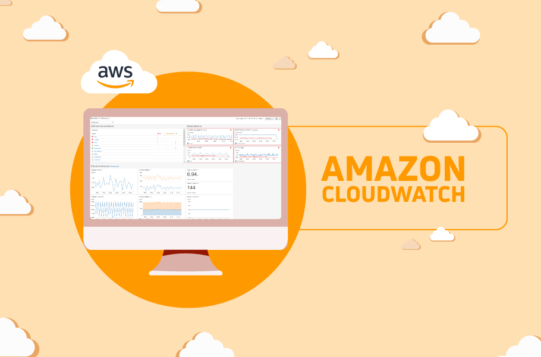
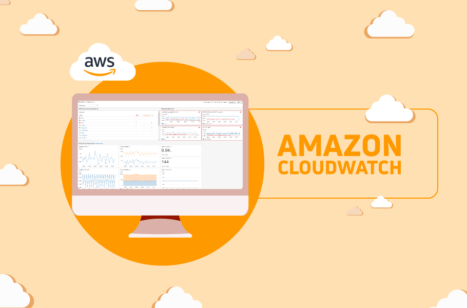

Porque eu deveria usa-lo?
Entre as suas principais funcionalidades, estão os Dashboards, que nada mais são que paineis que te ajudam a visualizar o seu ambiente de desenvolvimento em tempo real!
Existem tambem os alarmes, que, como o nome ja sugere, avisam e alertam quando ha algo fora do esperado. (Por exemplo, Um alarme que avise quando o uso da CPU passe de 80%).
Alem dessas principais funcionalidades, tambem é possivel contar com os recursos de Logs, que armazena e analisa registros de aplicações e sistemas, e os Eventos, qie detectam mudanças na infraestrutura e automatizam respostas (Por exemplo: reiniciar instâncias automaticamente).

Curiosidades!
O que posso usar para acessar o CloudWatch?
O Amazon CloudWatch pode ser acessado por meio de API, interface da linha de comando, AWS SDKs e Console de Gerenciamento da AWS.
Quais sistemas operacionais são compatíveis com o Amazon CloudWatch?
O Amazon CloudWatch recebe e fornece métricas para todas as instâncias do Amazon EC2 e deve funcionar com qualquer sistema operacional compatível no momento com o serviço Amazon EC2.
O que é observabilidade entre contas no CloudWatch?
No CloudWatch, a observabilidade entre contas permite que você monitore e solucione problemas de aplicações distribuídas entre várias contas em uma determinada região. Com a observabilidade entre contas, você pode pesquisar, visualizar e analisar de forma integrada métricas, logs e rastreamentos sem se preocupar com os limites das contas.
 
